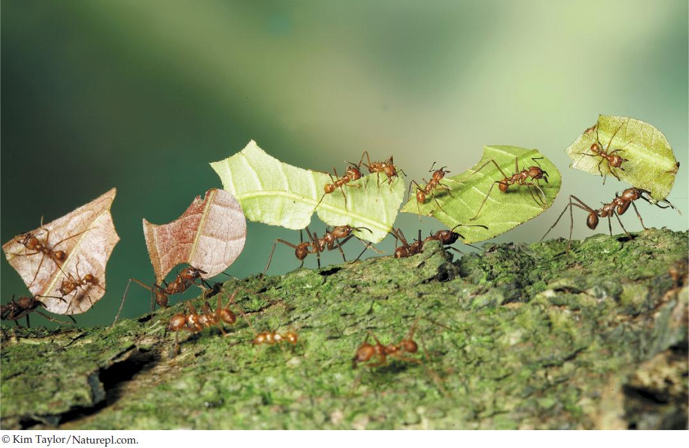

| 43 | Ecological and Evolutionary Consequences of Interactions within and among Species |
|
KEY CONCEPTS
43.1 Interactions between Species May Increase, Decrease, or Have No Effect on Fitness 43.2 Interactions within and among Species Affect Population Dynamics and Species Distributions 43.3 Species Are Embedded in Complex Interaction Webs 43.4 Interactions within and among Species Can Result in Evolution |

Leaf-cutter ants of the tropical species Atta cephalotes carry coca leaves through the rainforest. The ants riding on the leaves act as “bodyguards,” warding off parasitic flies that might otherwise lay their eggs on the larger worker ants.
|
On a morning walk in the Arizona desert, it’s hard to resist the temptation to stop and watch the parades of colorful flower and leaf fragments that march across your path. The fragments aren’t moving on their own, of course—they’re being carried by Acromyrmex versicolor, one of the 47 described species of leaf-cutter ants. Leaf-cutter ants are tropical insects whose geographic range barely extends into North America. If you travel south through Mexico and into the Neotropics, however, you will see more and more ant highways and more and more different leaf-cutter species. Leaf-cutter ants originated in South America about 10 million years ago, crossing into North America only after the Panamanian land bridge connected the two continents.
Leaf-cutter ants are important herbivores of the Neotropics. A single underground nest can contain 8 million workers, occupy 20 cubic meters of soil, and consume more than 2 kilograms of plant material per day—enough to strip a large area of vegetation. Leaf-cutters aren’t ordinary herbivores, however: they’re fungus farmers! They cultivate a fungus in the nest that grows nowhere else on Earth, feeding it with the leaf fragments they harvest. Different leaf-cutter species cultivate different fungus species, all in the family Lepiotaceae.
The interaction between fungus and ant is an obligate one—neither species can live without the other—and it involves a remarkable array of specialized adaptations on the part of both partners. A new queen carries a pellet of fungus with her when she leaves her mother’s nest and uses it to start her own small fungus garden, which she nourishes with her feces. She and the larvae that develop from her eggs feed on special nutrient-rich fungal structures. After the larvae pupate and metamorphose into worker ants, they collect leaf material to feed the growing fungus garden. As the colony expands, the workers dig new chambers, transport fragments of the fungus to those chambers, and take on other tasks as scouts, gardeners, nurses, garbage collectors, undertakers—and even bodyguards for the leaf harvesters.
Leaf-cutters associate with other species that influence their interactixon with the fungus. A bacterium in the genus Pseudonocardia, carried on the ants’ exoskeletons, manufactures antibiotics that suppress the crop-killing green mold Escovopsis but do not harm the cultivated fungus. And just recently, researchers discovered a nitrogen-fixing bacterium, Klebsiella, in the fungus gardens. Much remains to be learned about leaf-cutter interactions!
How could the intricate ecological relationship between leaf-cutter ants and fungus have evolved?